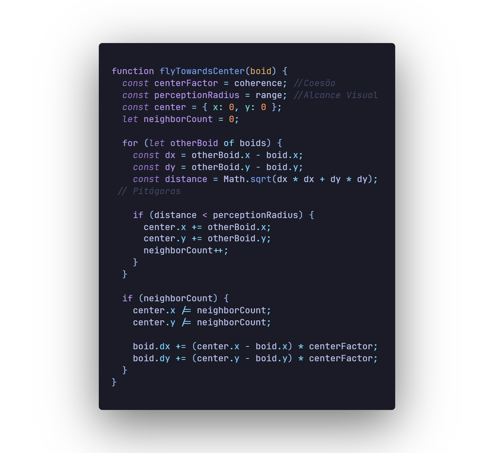
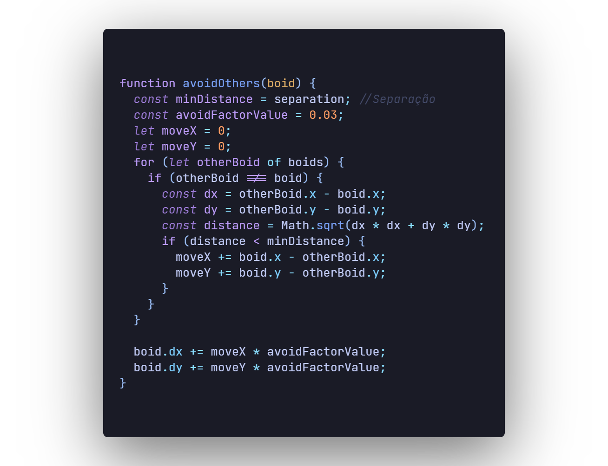
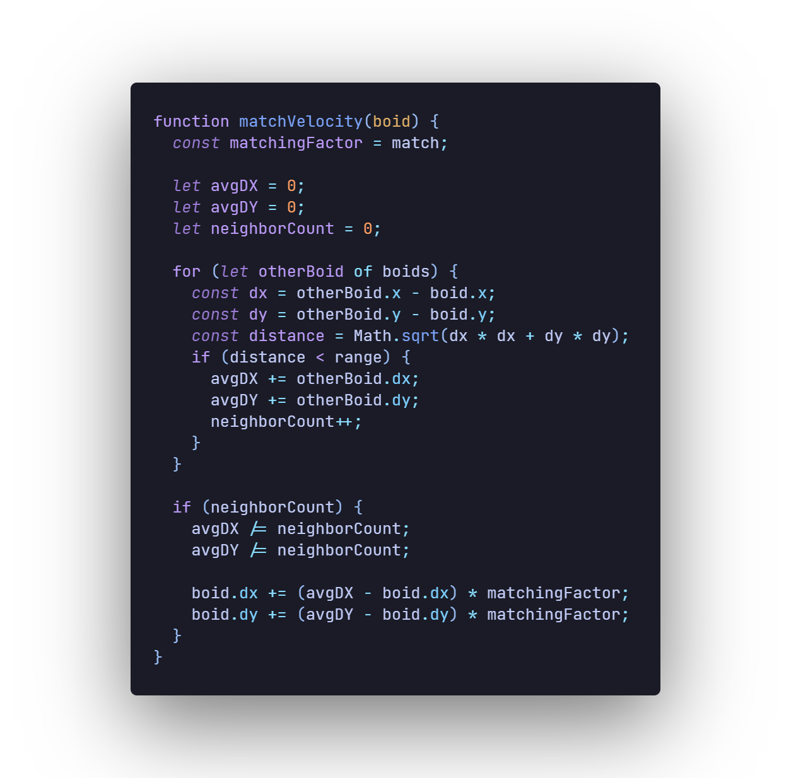

Cada um dos boids (bird-oid/ Objetos Pássaros) obedece a três simples regras:
Cada boid voa em direção à outros boids. Mas eles não voam diretamente um para o outro. Eles se dirigem gradualmente um para o outro a uma taxa que você pode ajustar com o controle deslizante "Coesão".
Cada boid também tenta evitar correr para os outros boids. Se ficar muito perto de outro boid, ele se afastará dele. Você pode controlar a rapidez com que ele dirige com o controle deslizante "Separação".
Por fim, cada boid tenta igualar o vetor (velocidade e direção) dos outros boids ao seu redor. Novamente, você pode controlar a rapidez com que eles tentam combinar vetores usando o controle deslizante "Alinhamento".
Existem várias maneiras de estender esse modelo simples para simular melhor o comportamento de diferentes animais. Por exemplo limitar o "alcance visual" de cada boid. Os animais reais não podem ver todo o rebanho; eles só podem ver os outros animais ao seu redor. Ao ajustar o controle deslizante de alcance visual, você pode ajustar até que ponto cada boid pode "ver" — ou seja, quais outros boids ele considera ao aplicar as três regras acima.
Se você deseja saber mais, aqui está:
Se você não sabe inglês. Aprenda uai ; -;